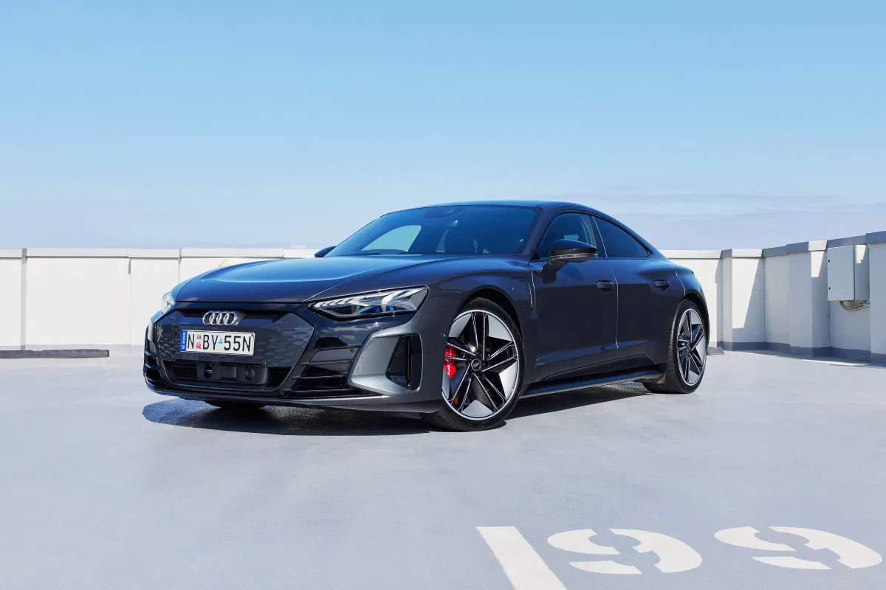
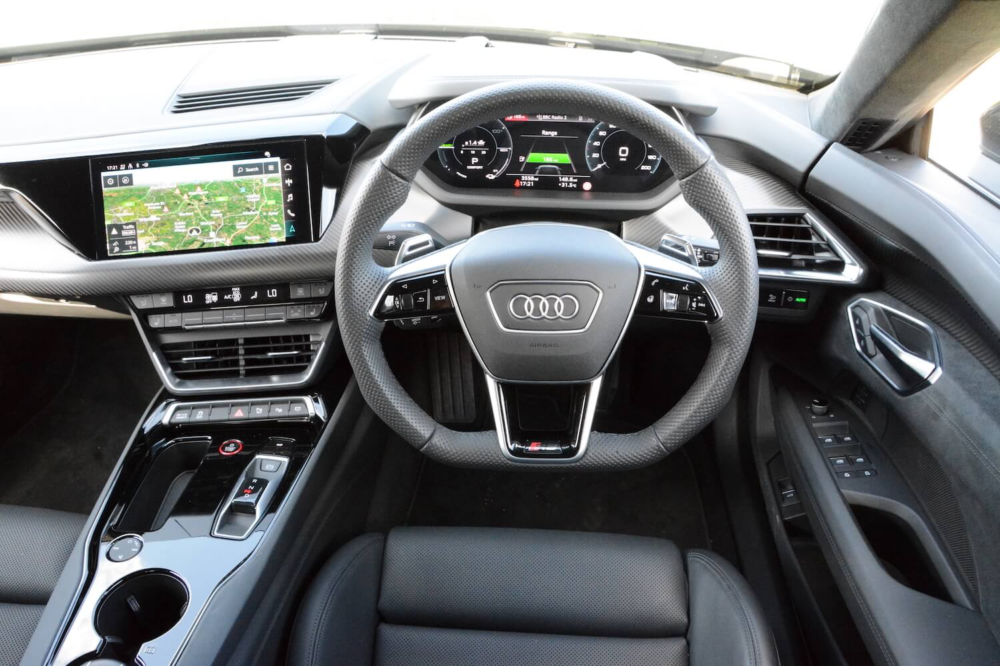
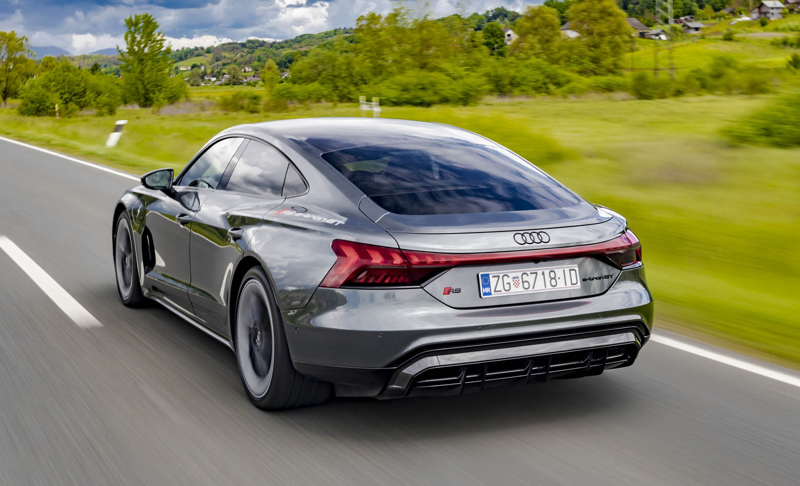

Audi RS e-tron GT - Budućnost je ovdje
Audi RS e-tron GT nije samo još jedan električni automobil na tržištu – on je pravi simbol budućnosti automobilske industrije, kombinirajući najnoviju tehnologiju, izuzetne performanse i luksuz na potpuno novoj razini. Audi, poznat po svom inženjerskom majstorstvu, stvorio je vozilo koje ne samo da zadovoljava zahtjeve današnjih vozača, već i pomiče granice onoga što se smatralo mogućim za električna vozila. S nevjerojatnom snagom od 590 KS, a uz opcionalni boost na 637 KS, Audi RS e-tron GT pruža vrhunske performanse koje rivaliziraju s mnogim sportskim automobilima. Ubrzanje od 0 do 100 km/h za samo 3.3 sekunde stavlja ga u sam vrh najbržih električnih automobila na tržištu, dok električni pogon omogućava nesmetanu, tihu i brzu vožnju.
RS e-tron GT nije samo moćan, već i iznimno aerodinamičan, s dizajnom koji je pažljivo razvijen kako bi se postigla savršena ravnoteža između estetike i funkcionalnosti. S obzirom na njegove sportske performanse, Audi je uspio stvoriti vozilo koje izgleda upravo onako kako se vozači i ljubitelji automobila nadaju – agresivno, dinamično i elegantno. Njegove oštre linije, široka karoserija i nizak profil stvaraju dojam ne samo snage, već i visoke efikasnosti. U kombinaciji sa svjetlosnim sustavima koji koriste najnoviju LED tehnologiju, RS e-tron GT je automobil koji se ne može ignorirati na cesti.
U unutrašnjosti, Audi je iskoristio svaki detalj kako bi stvorio prostor koji nudi vrhunski luksuz i udobnost. Svi materijali su pažljivo odabrani kako bi osigurali dugovječnost i visoku kvalitetu, od perforirane kože na sjedalima do sofisticiranih metalnih i karbonskih elemenata koji stvaraju dojam sportskog automobila. Infotainment sustav baziran na najnovijoj MMI tehnologiji nudi besprijekornu povezanost, a virtualni kokpit omogućava vozaču potpuni nadzor nad svim potrebnim informacijama. Uz vrhunski audio sustav Bang & Olufsen, vozači i putnici mogu uživati u kristalno čistom zvuku, čineći svaki put u RS e-tron GT-u nezaboravnim iskustvom.
Ali performanse i dizajn nisu jedini razlozi zbog kojih je Audi RS e-tron GT istaknut među ostalim električnim vozilima. S dometom od 400 km na jednom punjenju, RS e-tron GT omogućava vozačima da se upuste u duže vožnje bez brige o punjenju. Ovaj impresivni domet postignut je zahvaljujući velikoj bateriji od 93.4 kWh koja omogućava optimalnu ravnotežu između performansi i efikasnosti. Osim toga, Audi RS e-tron GT nudi brzo punjenje koje omogućava punjenje do 80% u samo 22 minute, što znači da vozači ne moraju čekati dugo za nastavak vožnje. Ovo je savršen automobil za vozače koji traže najbolje od oba svijeta – ekološku održivost bez kompromisa u pogledu performansi i luksuza.
Što se tiče vozačkog iskustva, Audi RS e-tron GT nudi besprijekornu kontrolu i preciznost. S adaptivnim zračnim ovjesom koji se prilagođava uvjetima na cesti, automobil pruža izuzetnu stabilnost i udobnost, bilo da vozite po ravnoj autocesti ili uživate u vožnji kroz krivudave ceste. Audi je u ovaj model uveo najnovije sustave pomoći vozaču, uključujući prilagodljiv tempomat, asistenciju za održavanje trake i sustav za prepoznavanje pješaka, što čini vožnju sigurnijom i opuštenijom. S pogonom na sva četiri kotača, RS e-tron GT pruža savršen balans između snage i kontrole, omogućujući vozaču da uživa u svakom trenutku vožnje, bez obzira na uvjete na cesti.
Na kraju, Audi RS e-tron GT nije samo simbol napretka u tehnologiji električnih vozila, već i odraz filozofije marke Audi, koja je uvijek bila predvodnik inovacija, luksuza i performansi. Ovaj automobil nije samo prevozno sredstvo – on je iskustvo, izjavljeni korak prema budućnosti. Audi RS e-tron GT donosi nam budućnost mobilnosti već danas, pokazujući da električna vozila mogu biti jednako uzbudljiva, snažna i luksuzna kao i klasična sportska vozila. Audi je stvorio automobil koji nije samo električan, već i potpuno redefinira što znači voziti automobil u 21. stoljeću.